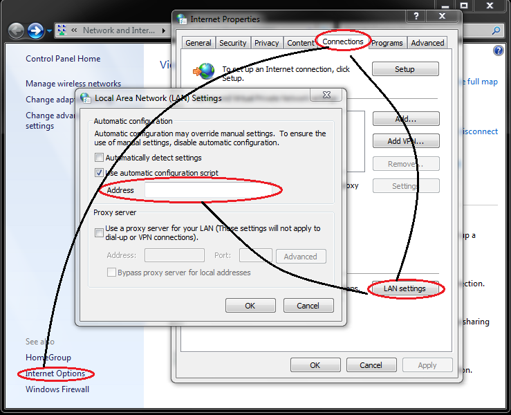

Proxy/VPNInstallation Instruction on Windows 7
- Tools
HTTP Proxy
- Open
Control Panel-->Network and Internet-->Network and Sharing Center-->Internet Options-->ConnectionsTab -->LAN Settings. This will open another new window. Check the box in the "Use automatic configuration script" section, and uncheck the "Automatically detect settings" box.  - Copy the text in
Address:http://178.62.33.140/config/http_proxy.pac - When you are done using your proxy and want to go back to your direct connection, open the LAN settings again, recheck the “Automatically detect settings” box and uncheck the box in the “Use automatic configuration script” section.
SOCKS5 Proxy
- Follow the first step of setting up HTTP Proxy.
- Copy the text in
Address:http://178.62.33.140/config/socks.pac - When you are done using your proxy and want to go back to your direct connection, open the LAN settings again, recheck the “Automatically detect settings” box and uncheck the box in the “Use automatic configuration script” section.
L2TP VPN
- Click on the Start Menu and go to the
Control Panel. Go to theNetwork and Internetsection. ClickView network status and tasksto show theNetwork and Sharing Center. - Click
Set up a new connection or network. SelectConnect to a workplaceand clickNext. - Click
Use my Internet connection (VPN):Internet address: 178.62.33.140Destination name: Databox VPN
- Check the
Don't connect now; just set it up so I can connect latercheckbox. ClickNext:User name: databoxPassword: 123456- Check the
Remember this passwordcheckbox - Click Connect, then
Close.
- Return to the Control Panel's
Network and Internetsection and click on theConnect to a networkoption. Right-click on the new Databox VPN connection and chooseProperties:- Click the
Optionstab and uncheckInclude Windows logon domain. - Click the
Securitytab and selectLayer 2 Tunneling Protocol with IPsec (L2TP/IPSec)from theType of VPNdrop-down menu. - Click the
Advanced settingsbutton. SelectUse preshared key for authenticationand enter 654321 for theKey.
- Click the
- Click
OKtwice to save the VPN connection details. To connect to the VPN, simply right-click on the wireless/network icon in your system tray, select Databox VPN, and clickConnect.
You can verify that your traffic is being routed properly by looking up your IP address. It should say Your public IP address is 178.62.33.140.